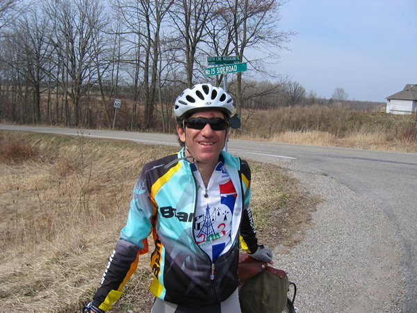
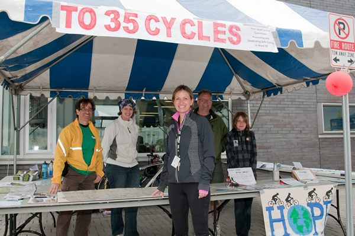

Other Interests and Activities
Artist
Fine Arts degree. Working in various media, primarily watercolour and acrylic painting, and ceramics. This is a sample of some of my work:
Can-Bike Instructor
Can-Bike is a bicycle safety course, akin to Young Drivers, to teach bike and road handling skills.
Courses are run by local groups with instructors certified through Cycle Canada's Can-Bike program.
I taught Can-Bike through the City of Toronto from 1991 to 2001.

Long-distance Cycling
I became interested in long-distance cycling in the early 1990s starting with completing 160 km (Imperial Century) rides. I soon joined a Randonneuring club, which organized rides of even longer distances. These are noncompetetive rides where one had a fixed time limit to complete a ride with checkpoints along the route. Much of the challenge is mental and good time management is key to succesfully completing a ride. The club is affiliated with a central club in France that holds a 1200 Km ride, Paris-Brest-Paris (PBP) every 4 years. One has to complete a set qualifying rides with your local club in order to participate in PBP. In 1999 I completed PBP. You can read about my experiences here.
Community Involvement
I was co-founder of a local group in Scarborugh that worked to improve cycling and cycling safety in Scarborough from 2012 to 2014
